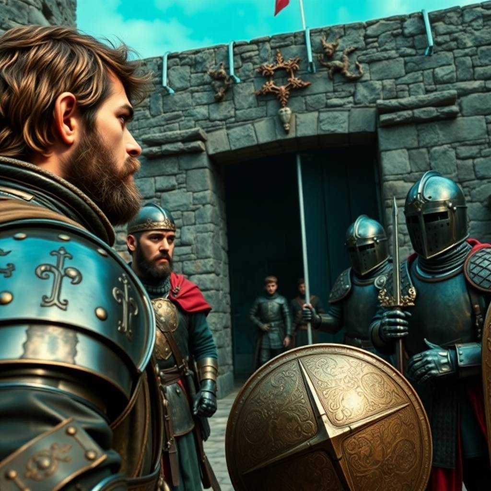

Част 2: Средновековна България
Алексей се опита да обясни присъствието си, но никой не го разбираше. Дрехите му изглеждаха странни, а непознатата му реч предизвикаше съмнения. Войници бързо го арестуваха и го заведоха при болярина Драгомир, един от най-влиятелните мъже в града. Алексей разпознаваше авторитета в лицето на Драгомир, който, въпреки вниманието към детайлите, беше строг и сериозен. – Кой си ти и какво правиш тук? – попита го Драгомир строго, като го изследваше с очи, които изглеждаха като изострени от войнственото му минало. Алексей се замисли как да отговори, без да разкрие тайната на произхода си. Реши да се представи за странник от далечни земи, който търси убежище. Драгомир го изгледа внимателно, но преди да даде заповед, в залата влезе млада жена – Калина, дъщеря на Драгомир. Тя се вгледа в Алексей с любопитство и предложи: – Татко, нека му дадем шанс. Той може да ни бъде полезен. Драгомир се съгласи с неохота. Така Алексей остана в Търновград, като се опитваше да научи повече за културата и обичаите на средновековните българи. Калина му помогна да се адаптира към новото обкръжение, а с времето започнаха да се създават истински приятелства между тях. Въпреки че времето в този исторически период беше тежко и изпълнено с конфликти, Алексей реши да използва знанията си за напреднали технологии, за да помогне на хората около себе си. След няколко месеца той научи, че Търново е заплашен от нападение от съседно царство. След като потърси начин да помогне, Алексей създаде нещо, което приличаше на катапулт. С този примитивен, но ефективен механизъм, той помогна на защитниците на града да отблъснат вражеските войски и да спасят Търново. Но въпреки успеха си, Алексей знаеше, че времето му в миналото не може да продължава вечно. Присъствието му в този период можеше да промени хода на историята. С помощта на Калина, той успя да активира машината на времето и отново се потопи в мрака, завръщайки се в своята лаборатория.
